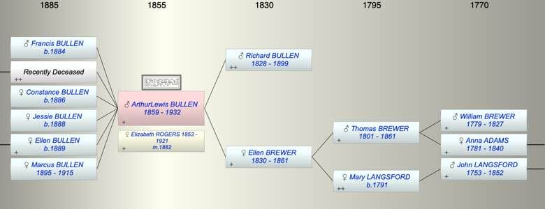

| [Index] |
| ArthurLewis BULLEN (1859 - 1932) |
|  |

|
| b. 1859 at Clapton Middx |
| m. 11 Oct 1882 Elizabeth ROGERS (1853 - 1921) at Nottinghill, London |
| d. 1932 at Boulder Australia aged 73 |
| Near Relatives of ArthurLewis BULLEN (1859 - 1932) | ||||||
| Relationship | Person | Born | Birth Place | Died | Death Place | Age |
| Grandfather | Thomas BREWER | 1801 | Heavitree | 07 Jan 1861 | 60 | |
| Grandmother | Mary LANGSFORD | 1791 | Exminster | |||
| Father | Richard BULLEN | 1828 | 1899 | 71 | ||
| Mother | Ellen BREWER | 20 Apr 1830 | Exminster | 02 Apr 1861 | 30 | |
| Self | ArthurLewis BULLEN | 1859 | Clapton Middx | 1932 | Boulder Australia | 73 |
| Wife | Elizabeth ROGERS | 1853 | 1921 | 68 | ||
| Son | Francis A BULLEN | 1884 | ||||
| Son | Living or Recently Deceased | |||||
| Daughter | Constance Evelyn Annie BULLEN | 1886 | Lewisham | |||
| Daughter | Jessie Mary Winifred BULLEN | 1888 | ||||
| Daughter | Ellen Nora BULLEN | 25 Oct 1889 | Bromley, Kent | |||
| Daughter | Marcus Charles BULLEN | 25 Jan 1895 | Herne Hill, London | 01 Aug 1915 | Gallipoli | 20 |
| Half Brother | Unknown BULLEN | |||||
| Brother | Richard H BULLEN | 1863 | Clapton, Middx | Y | ||
| Sister | Flora BULLEN | 1870 | Clapton, Middx | Y | ||
| Daughter in Law | Living or Recently Deceased | |||||
| Daughter in Law | Eunice Mabel (Isabel) Eileen KINGSBURY | 03 Aug 1906 | Swan | |||
| Son in Law | Living or Recently Deceased | |||||
| Granddaughter | Living or Recently Deceased | |||||
| Granddaughter | Living or Recently Deceased | |||||
| Grandson | Arthur Douglas BULLEN | 14 Jul 1919 | Boulder Australia | |||
| Grandson | Living or Recently Deceased | |||||
| Granddaughter | Living or Recently Deceased | |||||
| Granddaughter | Living or Recently Deceased | |||||
| Granddaughter | Living or Recently Deceased | |||||
| Granddaughter | Living or Recently Deceased | |||||
| Uncle | Frederick BREWER | 16 Sep 1822 | Exminster | 1822 | Exminster | 0 |
| Uncle | Frederck BREWER | 16 Sep 1823 | Exminster | 1909 | Croydon | 86 |
| Aunt | Mary HEATH | 1873 | Lewisham | |||
| Aunt | Elvina KEABLE | 1848 | LIketshall, Suffolk | 1904 | Chertsey, Surrey | 56 |
| Uncle | Frank BREWER | 22 Nov 1825 | Exminster | 04 Nov 1895 | Kingston On Thames | 69 |
| Aunt | Elizabeth HENSOM | |||||
| Uncle | Lewis BREWER | 13 Mar 1828 | Exminster | 1836 | Exminster | 8 |
| Aunt | Flora BREWER | 15 Dec 1832 | Exminster | Y | ||
| Uncle | John Perry HAYWARD | 1831 | Topsham | Y | ||
| Aunt | Ruth BREWER | 23 Apr 1835 | Exminster | Y | ||
| Uncle | William HEATH | 1824 | Teignmouth | Y | ||
| Uncle | Lewis BREWER | 1839 | Exminster | 31 Mar 1906 | Redbridge, Hampshire | 67 |
| Aunt | Mary A PHILLIPS | |||||
| Uncle | Henry BREWER | 25 Mar 1814 | ||||
| Aunt | Elizabeth BERRY | |||||
| Uncle | Robert BREWER | 03 Nov 1817 | 1887 | 70 | ||
| Cousin | Living or Recently Deceased | |||||
| Cousin | Living or Recently Deceased | |||||
| Cousin | Annie Hesom BREWER | |||||
| Cousin | Julia BREWER | 1849 | Exminster | Y | ||
| Cousin | Warwick BREWER | 1853 | 1872 | 19 | ||
| Cousin | Gilbert Devon BREWER | 08 May 1855 | 03 Jun 1893 | Greenhythe | 38 | |
| Cousin | Eva L BREWER | 1858 | Y | |||
| Cousin | Mary L HAYWARD | 1857 | Topsham | Y | ||
| Cousin | Thomas J P HAYWARD | 1859 | Topsham | Y | ||
| Cousin | Augustus HEATH | 1856 | Deptford | Y | ||
| Cousin | Thomas Brewer HEATH | 13 Jan 1858 | Deptford | Y | ||
| Cousin | Mary HEATH | 1865 | Deptford | Y | ||
| Cousin | William HEATH | 1872 | Deptford | Y | ||
| Cousin | Maud HEATH | 1876 | Lewisham | Y | ||
| Cousin | Living or Recently Deceased | |||||
| Cousin | Minnie Amelia BREWER | 1866 | Y | |||
| Events in ArthurLewis BULLEN (1859 - 1932)'s life | |||||
| Date | Age | Event | Place | Notes | Src |
| 1859 | ArthurLewis BULLEN was born | Clapton Middx | |||
| 02 Apr 1861 | 2 | Death of mother Ellen BREWER (aged 30) | |||
| 11 Oct 1882 | 23 | Married Elizabeth ROGERS (aged 29) | Nottinghill, London | ||
| 1884 | 25 | Birth of son Francis A BULLEN | |||
| 1886 | 27 | Birth of daughter Constance Evelyn Annie BULLEN | Lewisham | ||
| 1888 | 29 | Birth of daughter Jessie Mary Winifred BULLEN | |||
| 25 Oct 1889 | 30 | Birth of daughter Ellen Nora BULLEN | Bromley, Kent | ||
| 25 Jan 1895 | 36 | Birth of daughter Marcus Charles BULLEN | Herne Hill, London | ||
| 1899 | 40 | Death of father Richard BULLEN (aged 71) | |||
| 01 Aug 1915 | 56 | Death of daughter Marcus Charles BULLEN (aged 20) | Gallipoli | killed in. action | |
| 1921 | 62 | Death of wife Elizabeth ROGERS (aged 68) | Guildford cemetery | ||
| 1932 | 73 | ArthurLewis BULLEN died | Boulder Australia | ||
| Personal Notes: |
|
son Marcus Charles killed in action see photo
1891and 1911 census provides chidlren 1911 Arthur Lewis Bullen 52 Head, Elizabeth Bullen 57 Wife Constance Evelyn Annie Bullen 25 Daughter Jessie Mary Winifred Bullen 23 Daughter Ellen Nora Bullen 21Daughter Marcus Charles Bullen 16 Son John Percival Bishopp 26 Visitor Denise: Arthur Lewis Bullen and Elizabeth (Rogers) also emigrated to Australia. Mrs Elizabeth Bullen was postmistress at Smiths Mill/GlenForrest 1915-1920. Their daughter Ellen Nora Bullen married Patrick Henry Caine in Perth 1914. (So she also emigrated). She was also Post Mistress there in 1914-15. Elizabeth is Buried Guildford Cemetery, died 1921. Arthur seems to have disappeared as I can't find his death anywhere! He did try to enlist in 1915 but deemed unfit - insufficient teeth and obesity ( he was 5' 3" and 15 st). |
| Created on a Mac™ using iFamily for Mac™ on 15 Sep 2023 |